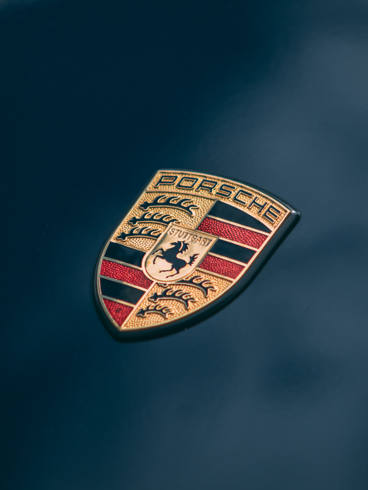
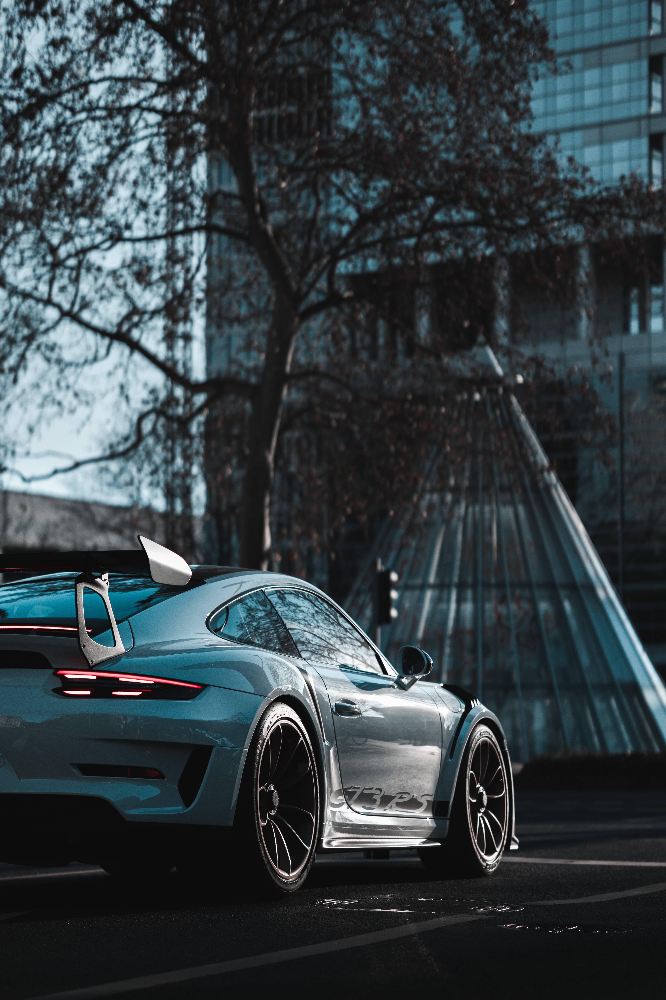

Porsche Nedir?
Porsche, Almanya merkezli bir otomobil üreticisi ve spor araçlarının öncüsüdür. 1931 yılında Ferdinand Porsche tarafından kurulmuştur.

Porsche Modelleri
Porsche, genellikle spor otomobilleriyle bilinir. 911, Cayman, Panamera gibi modelleriyle tanınmaktadır.

Teknoloji
Porsche, yüksek performanslı araçlarında son teknolojiyi kullanarak sürüş deneyimini zirveye taşımaktadır. Güçlü motorlar ve özel tasarımlarıyla öne çıkar.